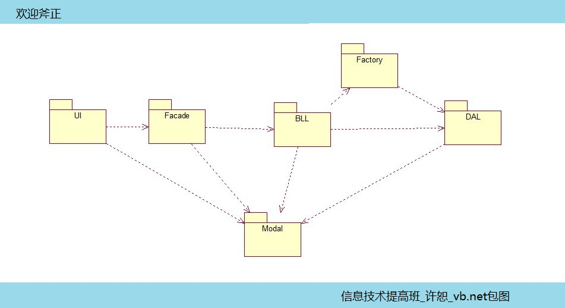
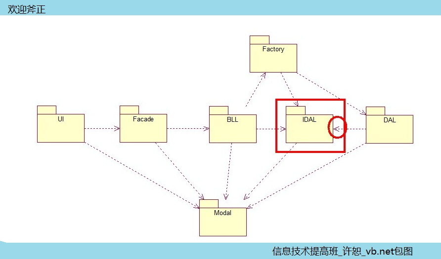
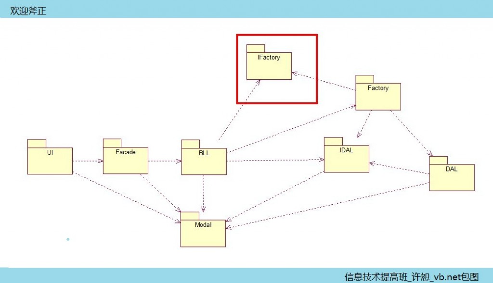
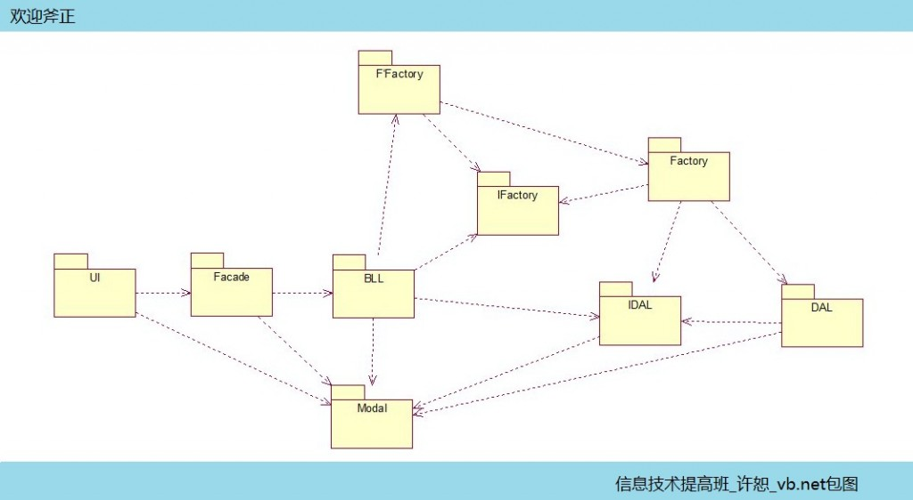

这也许不是最纠结的一个时期，但是让我纠结了很长一段时间，有一些东西推倒了重来，再推到了再重来！辛苦的就像一场革命！但是这一场辛苦下来也是赚到了知识的进一步认识很熟悉！
下边就是我这几个图的演变：
最初自己想的简单工厂：

这张图完成后马上就遭到了否决，原因很简单，没有接口层，迅速的改正完成这个图：

又在此基础上用抽象工厂：

但是经过几天的考虑和师父商量，这张图在IFactory那里加了点东西：

通过工厂的工厂（F'Factory）让工厂和逻辑层解耦！但是，这张图被我无情的枪毙，它的关系虽然还好，但是机房收费系统的需求有这么复杂吗？答案肯定是没有，但是，还有一个技术没有用到，就是反射，所以迅速反应完成了这张图：

这张图完成后，虽然有个大概的模型，但是具体怎么操作和实现，有待我们继续挖掘！探索ing……